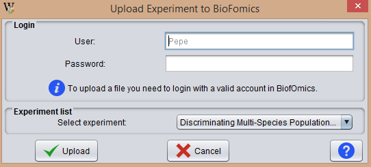

This operation allows the user to upload Experiments from BEW to BiofOmics database. This operation becomes available as soon as there is at least one experiment in the clipboard.

In the Login area the user sign in his BiofOmics account.
From the Experiment list area, the user should select the experiment to be uploaded.
NOTE: The user needs Internet connection to do this operation.